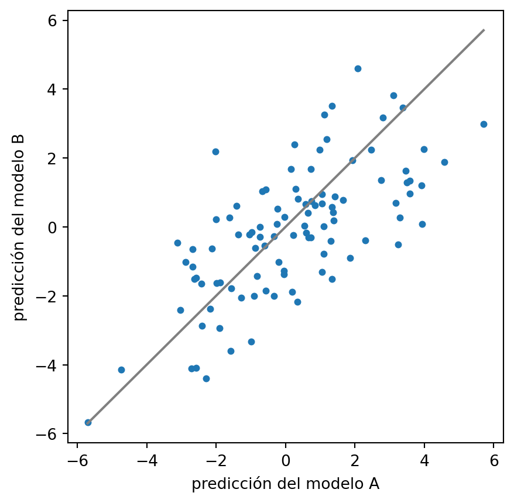

import numpy as np
import matplotlib.pyplot as pltDos modelos casi empatados pueden predecir distinto
exploraciones
Con 50 variables y 200 filas, varios subconjuntos de variables validan casi igual y comparten la mitad de sus columnas. Sus predicciones, fila a fila, no coinciden. Con simulación.
Tienes 200 filas y 50 variables. Pruebas subconjuntos de diez y te quedas con el que mejor valida.
Miras los que quedan justo por debajo del mejor. Llevan otras variables y validan casi igual.
Yo esperaba que esos modelos compartieran tres o cuatro variables con el ganador. Me equivoqué en el número. Y el motivo tiene que ver con cuántas variables llevan señal de verdad.
Un mundo donde conozco la respuesta
Genero 50 variables independientes. Las 25 primeras tienen efecto de verdad. Las otras 25 son ruido puro.
El ruido de la respuesta tiene la misma desviación que la señal. Con eso, el R² más alto que alcanzaría un modelo perfecto es 0,5.
np.random.seed(2024)
n, p, k = 200, 50, 10
X = np.random.normal(size=(n, p))
beta = np.zeros(p)
beta[:25] = np.random.choice([-1, 1], 25) * np.random.uniform(0.3, 0.7, 25)
senal = X @ beta
sigma = senal.std()
y = senal + np.random.normal(scale=sigma, size=n)
orden = np.random.permutation(n)
tr, va = orden[:100], orden[100:]
print("R2 teorico maximo:", round(senal.var() / (senal.var() + sigma**2), 3))R2 teorico maximo: 0.5Cien filas para entrenar y cien para validar. Como sé qué variables son señal, después puedo mirar cuántas de ruido se cuelan en cada modelo.
Cómo encuentro subconjuntos buenos
Hay unos \(10^{10}\) subconjuntos de diez variables entre cincuenta. No los pruebo todos.
Pruebo dos mil elegidos al azar. Necesito dos funciones. Una ajusta la regresión con las columnas elegidas y me da el R² en validación. La otra me da el R² en entrenamiento.
def ajusta(S):
"""OLS con las columnas S. Devuelve R2 en validacion y predicciones."""
S = list(S)
A = np.column_stack([np.ones(len(tr)), X[tr][:, S]])
coef = np.linalg.lstsq(A, y[tr], rcond=None)[0]
pred = np.column_stack([np.ones(len(va)), X[va][:, S]]) @ coef
r2 = 1 - ((y[va] - pred) ** 2).sum() / ((y[va] - y[va].mean()) ** 2).sum()
return r2, pred
def r2_train(S):
S = list(S)
A = np.column_stack([np.ones(len(tr)), X[tr][:, S]])
coef = np.linalg.lstsq(A, y[tr], rcond=None)[0]
res = y[tr] - A @ coef
return 1 - (res ** 2).sum() / ((y[tr] - y[tr].mean()) ** 2).sum()np.random.seed(11)
azar = [np.sort(np.random.choice(p, k, replace=False)) for _ in range(2000)]
r2_azar = np.array([ajusta(S)[0] for S in azar])
print("mejor R2 de validacion:", round(r2_azar.max(), 4))
print("R2 medio:", round(r2_azar.mean(), 4))mejor R2 de validacion: 0.3196
R2 medio: 0.0012El R² medio de un subconjunto al azar es 0,0012: nada. Cada uno coge solo un trozo de la señal, y con cien filas lo que ganas se pierde al estimar los coeficientes. El mejor de los dos mil llega a 0,32.
Así que el azar puro me da pocos candidatos buenos. Hago otra cosa. Parto de un subconjunto, cambio una variable por otra y me quedo con el cambio si el R² de entrenamiento no empeora demasiado. Y guardo uno de cada nueve pasos. La validación no interviene en la búsqueda.
np.random.seed(12)
S = list(np.random.choice(p, k, replace=False))
actual = r2_train(S)
cadena = []
for paso in range(20000):
T = S.copy()
T[np.random.randint(k)] = np.random.choice([j for j in range(p) if j not in S])
nuevo = r2_train(T)
if np.log(np.random.rand()) < 100 * (nuevo - actual):
S, actual = T, nuevo
if paso >= 2000 and paso % 9 == 0:
cadena.append(np.sort(S))
r2_cadena = np.array([ajusta(S)[0] for S in cadena])
print("subconjuntos distintos:", len({tuple(s) for s in cadena}), "de", len(cadena))
print("mejor R2 de validacion:", round(r2_cadena.max(), 4))
print("R2 medio:", round(r2_cadena.mean(), 4))subconjuntos distintos: 1860 de 2000
mejor R2 de validacion: 0.3261
R2 medio: 0.0373La cadena recorre 1860 subconjuntos distintos y el mejor valida con 0,3261.
Qué cuenta como empate
Mi plan era contar los subconjuntos que quedan a menos de 0,01 de R² del mejor.
def empates(cands, r2s, tol=0.01):
ib = int(np.argmax(r2s))
unicos = {}
for i in np.where(r2s >= r2s[ib] - tol)[0]:
unicos[tuple(cands[i])] = r2s[i]
T = [set(t) for t in unicos]
mejor = set(cands[ib])
pares = [len(T[i] & T[j]) for i in range(len(T)) for j in range(i + 1, len(T))]
con_mejor = [len(t & mejor) for t in T if t != mejor]
ruido = [sum(v >= 25 for v in t) for t in T]
return dict(empatados=int((r2s >= r2s[ib] - tol).sum()), distintos=len(T),
solape_pares=np.mean(pares) if pares else None,
solape_mejor=np.mean(con_mejor) if con_mejor else None,
ruido_medio=np.mean(ruido), conjunto=sorted(unicos))
for nombre, c, r in [("azar", azar, r2_azar), ("cadena", cadena, r2_cadena)]:
for tol in (0.01, 0.02, 0.05):
e = empates(c, r, tol)
print(nombre, tol, {a: (round(b, 3) if isinstance(b, float) else b)
for a, b in e.items() if a != "conjunto"})azar 0.01 {'empatados': 1, 'distintos': 1, 'solape_pares': None, 'solape_mejor': None, 'ruido_medio': 3.0}
azar 0.02 {'empatados': 1, 'distintos': 1, 'solape_pares': None, 'solape_mejor': None, 'ruido_medio': 3.0}
azar 0.05 {'empatados': 3, 'distintos': 3, 'solape_pares': 4.333, 'solape_mejor': 5.5, 'ruido_medio': 2.333}
cadena 0.01 {'empatados': 1, 'distintos': 1, 'solape_pares': None, 'solape_mejor': None, 'ruido_medio': 2.0}
cadena 0.02 {'empatados': 2, 'distintos': 2, 'solape_pares': 5.0, 'solape_mejor': 5.0, 'ruido_medio': 1.5}
cadena 0.05 {'empatados': 9, 'distintos': 9, 'solape_pares': 5.806, 'solape_mejor': 5.5, 'ruido_medio': 1.667}A 0,01 queda un solo empatado, el propio mejor. Eso pasa en el azar y en la cadena. No hay con quién comparar.
Mi umbral era demasiado estrecho. Con cien filas de validación, una centésima de R² es una diferencia que la validación no sabe leer. Entre dos modelos que se llevan menos que eso no sabría decirte cuál es mejor.
Abro la tolerancia a 0,05. En la cadena, nueve subconjuntos distintos quedan dentro. En el azar, tres.
Con nueve ya se puede medir. Comparten de media 5,8 variables de diez. El mejor comparte de media 5,5 con los otros.
Esperaba menos de la mitad y sale más de la mitad. Tiene sentido: hay solo 25 variables con señal, y un modelo bueno tiene que coger buena parte de ellas. Para tener una referencia, dos subconjuntos de diez elegidos al azar entre esas 25 compartirían cuatro.
Tampoco están limpios. Cada empatado de la cadena lleva de media 1,67 variables de ruido. Un modelo que valida bien puede tener dos columnas que no pintan nada.
Lo que la métrica no te enseña
Cojo el mejor, A, y entre los empatados el que menos variables comparte con él, B.
ib = int(np.argmax(r2_cadena))
dist = empates(cadena, r2_cadena, 0.05)["conjunto"]
A = list(cadena[ib])
B = min((list(t) for t in dist if list(t) != A), key=lambda t: len(set(t) & set(A)))
print("A:", A, "\nB:", B, "\ncomunes:", len(set(A) & set(B)))
rA, pA = ajusta(A)
rB, pB = ajusta(B)
sd_res = (y[va] - pA).std()
dif = np.abs(pA - pB)
print("R2 A, B:", round(rA, 4), round(rB, 4))
print("correlacion predicciones:", round(np.corrcoef(pA, pB)[0, 1], 3))
print("sd residual (A):", round(sd_res, 3), " sd de las predicciones:", round(pA.std(), 3))
print("dif media abs:", round(dif.mean(), 3))
print("filas con dif > sd residual:", round((dif > sd_res).mean(), 3))A: [4, 6, 7, 8, 9, 10, 11, 13, 31, 39]
B: [0, 2, 4, 5, 8, 10, 11, 24, 31, 32]
comunes: 5
R2 A, B: 0.3261 0.2764
correlacion predicciones: 0.692
sd residual (A): 2.635 sd de las predicciones: 2.138
dif media abs: 1.328
filas con dif > sd residual: 0.11Comparten cinco variables. Sus R² son 0,3261 y 0,2764. Un informe de “R² en validación” diría que los dos modelos están cerca.
Pero sus predicciones correlacionan 0,692. La diferencia media entre sus predicciones es 1,33. En el 11 % de las filas, A y B se separan más que la desviación típica de los errores de A, que es 2,64.
Lo veo en un gráfico: cada punto es una fila de validación.
fig, ax = plt.subplots(figsize=(5, 5))
ax.scatter(pA, pB, s=12)
lim = [min(pA.min(), pB.min()), max(pA.max(), pB.max())]
ax.plot(lim, lim, color="grey")
ax.set_xlabel("predicción del modelo A")
ax.set_ylabel("predicción del modelo B")
plt.show()
Si los dos modelos dijeran lo mismo, los puntos caerían sobre la diagonal. Hay una nube alrededor. Para un mismo valor de A, B se abre arriba o abajo.
El R² resume cien filas en un número. Dos modelos pueden dar el mismo número fallando en filas distintas.
Por qué esto te importa
Breiman le puso nombre a esto en 2001: efecto Rashomon, muchos modelos distintos con un error parecido. Lo que he medido aquí es una versión pequeña, con 200 filas.
Cuando hay pocos datos, el mejor modelo de la validación es uno entre varios que la validación no sabe distinguir. Ganó por una diferencia pequeña, y con pocos datos esa diferencia se lee mal.
Dos consecuencias. La primera: la lista de variables de tu modelo ganador es una de varias posibles. Cinco de sus diez columnas se podían cambiar por las de B pagando cinco centésimas de R².
La segunda: si vas a usar el modelo para decidir sobre un caso concreto, mira cuánto cambia la predicción al cambiar de ganador. El R² no te lo va a contar.